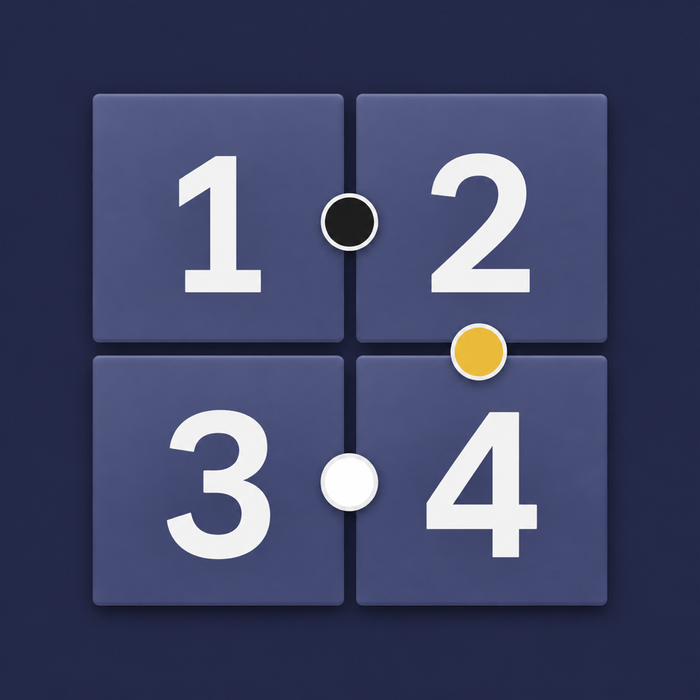

Support
Kropki Pairs
Fill a 4×4 grid with 1 to 4 so each digit appears once in every row and column. A white dot between two squares means the digits are consecutive; a black dot means one is exactly double the other. Edges without a dot carry no clue.
Tap an editable square, then a digit on the large four-key pad. Labels inside the squares and an inspector help you read each dot.
Six original boards, each unlocking the next once solved. Undo and Restart are always available, there is no timer, and your progress saves on this device. Plays offline. No ads, no account, no data collection.
Get help
Email hi@mosselora.com with your device model and what happened. We read every message.
Your progress
Progress is saved on your device only. Deleting the app removes it; there is no cloud backup.